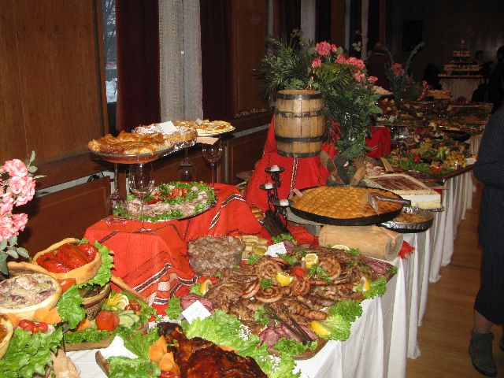
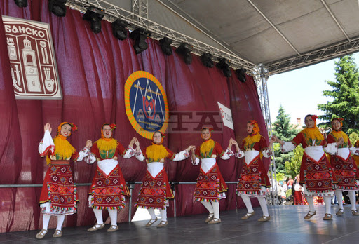
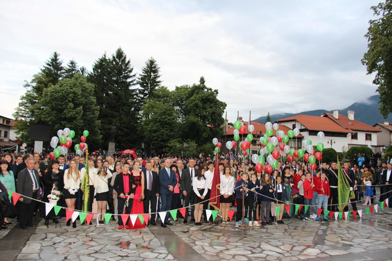

Банско-Традиции и обичаи
Банската кухня
| Всяка последна събота на месец май се организира кулинарна изложба на бански ястия, на която всеки участник демонстрира истинско майсторство. Огромното разнообразие от домашно приготвени ястия, с причудливи имена като: капама, чомлек, бански шиш, саче, агнешки специалитети, чеверме, дреболии, домашни питки и погачи, катино мезе, бански кустурета с кажель и чекане, дропка, сменка, бански старец, кървавица и шужук, шупла, кукурини, суловра, катък, црекульчи, целуварчи, може да очарова всекиго. Колкото екзотична е за гражданите и туристите, толкова и доставяща истинско кулинарно удоволствие е тази автентична кухня. |  |
Международен Фестивал-„Между три планини”
| Фестивал за автентичен фолклор „Между три планини” – съвместна инициатива на община Банско и Продуцентска къща „Едита Груп” се провежда през месец май всяка година в град Банско. В двата фестивални дни централният площад в Банско е сцена на самодейността - над 1000 певци и танцьори от цялата страна се надпяват и надиграват в красивия курортен град. Всички фолклорни групи представят танци и носии, изпълняват песни и ритуали от своя край. Десето издание на фолклорния фестивал беше много специално. Програмата беше обогатена с нови и интересни прояви: представяне на традиционни народни носии от различни етнографски райони и демонстрация на балкански кулинарни специалитети. |
.jpg "Народни танци")
|
|  | На фестивала участват фолклорни състави, танцови ансамбли и индивидуални изпълнители от всички краища на България и Балканския регион. Спектакъл на песните, хората представени по един неповторим начин. Традиция е на сцената на фестивала да се представят български обреди и обичаи. Десето издание на фолклорния фестивал беше много специално. Програмата беше обогатена с нови и интересни прояви: представяне на традиционни народни носии от различни етнографски райони и демонстрация на балкански кулинарни специалитети. Традиционно в края на май, вече шеста година, самодейни певчески и танцови състави от цяла България се представят на открита сцена в центъра на града. |
Денят на Банско
| Банско бележи своя празник на 5 октомври с богата програма. Общината е организирала много събития, които продължават цяла седмица. На празничния 5 октомври в 9:00ч. се служи тържествена света литургия в 181-годишната църква „Света Троица“. В 10:00ч. на паметниците и паметните плочи в общината се полагат венци и цветя, а в 10:30ч. е предвидено възпоменателно тържество пред паметника „Банско помни героите“. За малките посетители в 11:00ч. на язовир „Белизмата“ се провежда риболовен турнир под надслов „Детето риболовец без дрога“. Концертът започва в 18:00ч. на площад „Никола Вапцаров“ и традиционно завършва с празнична заря. |  |